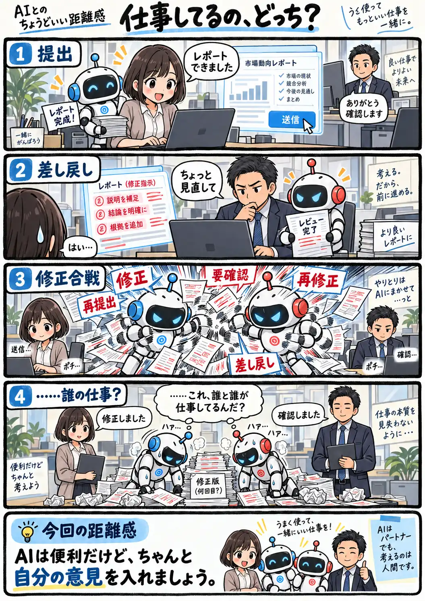

#127
仕事してるの、どっち？
報告して、直して、また報告。でも中身を見ているのは……？

メモ
AIを使えば、資料作成もレビューもかなり早く進められます。ただ、作る側も確認する側もAIの文章をそのまま受け渡していると、会話は続いていても、そこに人間の判断がほとんど入っていない状態になることがあります。
AIに任せること自体が問題なのではなく、何を採用するか、何を直すか、最終的に何を伝えたいかは自分で確認する。そのひと手間があるだけでも、AIは仕事を代わる存在ではなく、仕事を助ける存在として使いやすくなります。
今回の距離感
AIは便利だけど、ちゃんと自分の意見を入れましょう。